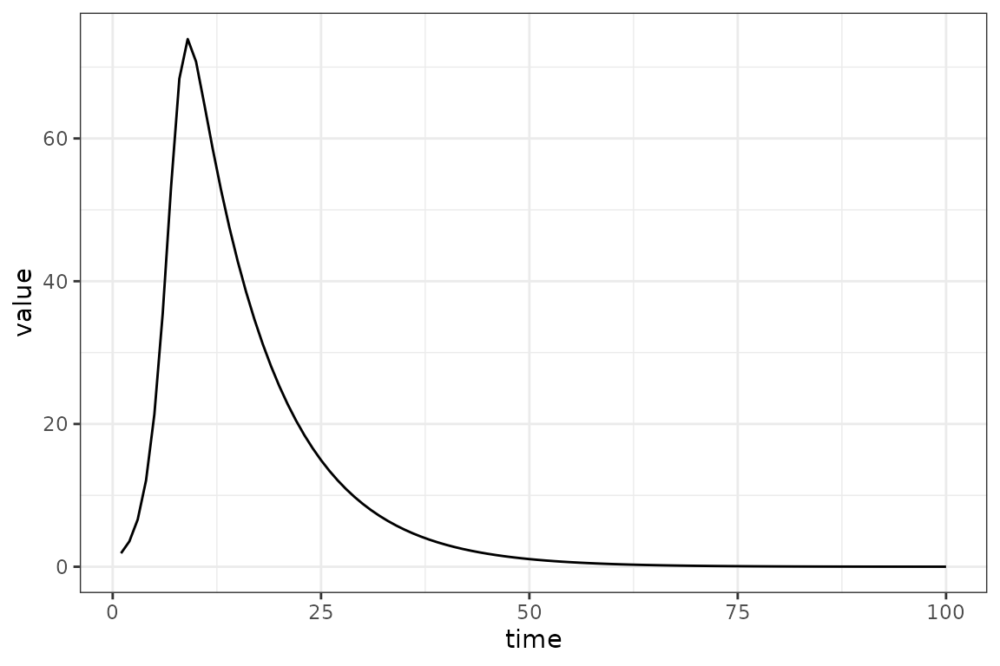
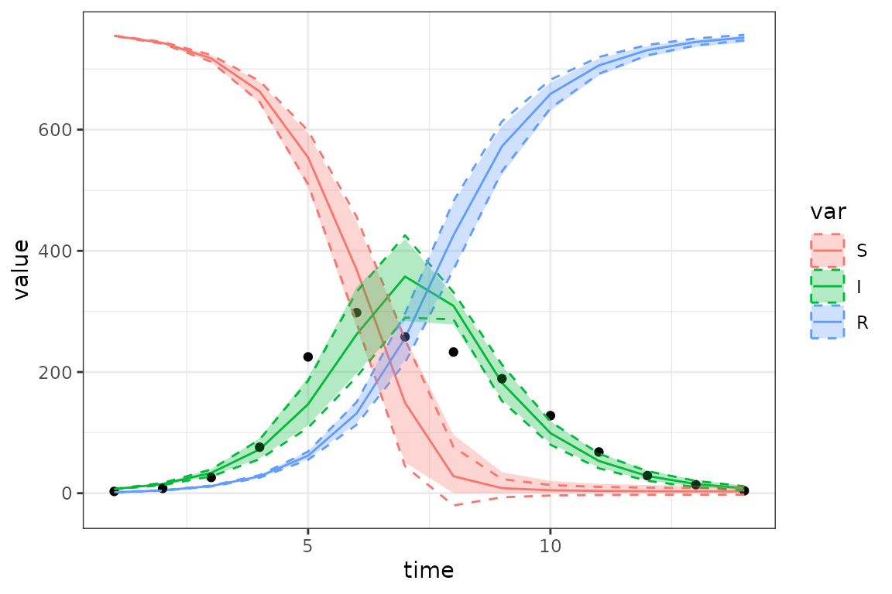
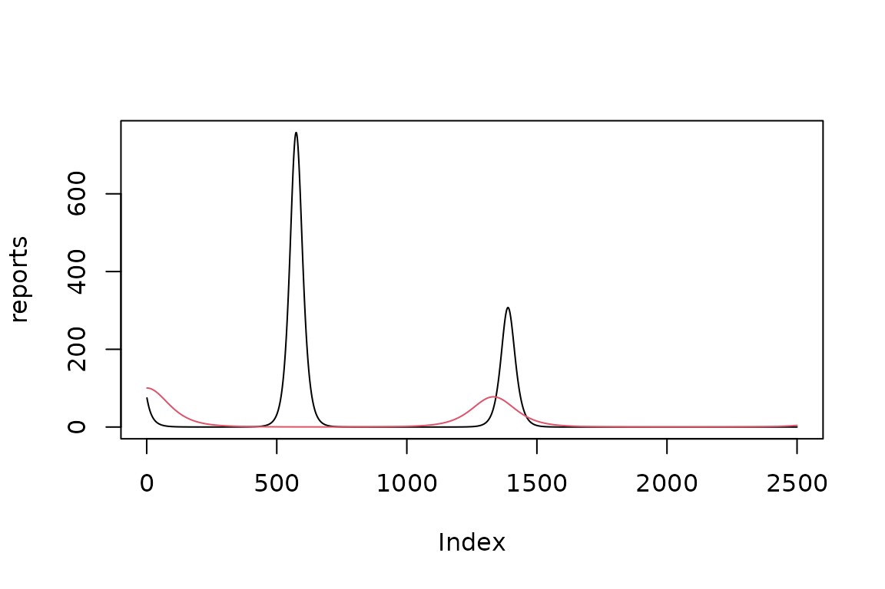
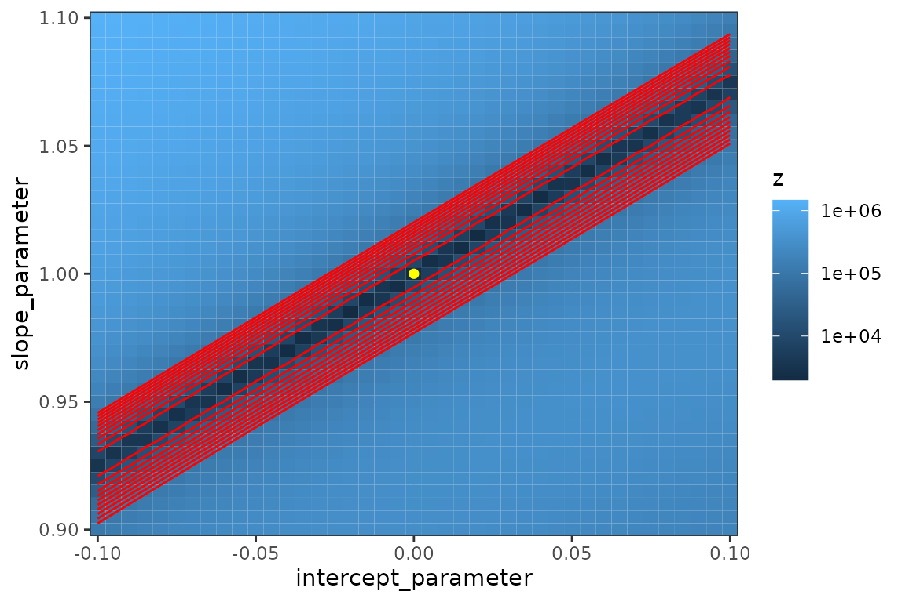

Setup:
library(macpan2)
library(macpan2helpers)
mp2hver <- "0.0.3"
if (packageVersion("macpan2helpers") < mp2hver) {
stop("please install macpan2helpers version >= ", mp2hver)
}
library(dplyr)
library(tidyr)
library(ggplot2); theme_set(theme_bw())In addition to these packages, the broom.mixed package
and outbreaks package will be used below (if
installed).
‘Hello, World’: an easy (??) calibration exercise
We’ll do the first thing you should always do when trying out a new fitting procedure: simulate clean, nice data from the model and see if you can recover something close to the true parameters.
Step 0: set up simulator and generate ‘data’
First set up the model from the quickstart guide. For convenience (since we will be using several different versions of this model along the way, and modifying existing models is not quite as simple as it could be), we’ll encapsulate this in a function so we can easily re-run it later to generate a new model. (To allow for some flexibility later on, I’m also making the initial state an argument to the function.)
mk_sim <- function(init_state = c(S = 99, I = 1, R = 0)) {
sir = Compartmental(system.file("starter_models", "sir", package = "macpan2"))
sim <- sir$simulators$tmb(
time_steps = 100,
state = init_state,
flow = c(foi = NA, gamma = 0.1),
beta = 0.2,
N = empty_matrix
)
return(sim)
}
sir_simulator <- mk_sim()
## `.phases = "during"` is important so that the number of observations matches the number of time steps
sir_results = sir_simulator$report(.phases = "during")fixme: providing mismatched time series (e.g. by
forgetting to specify .phases = "during" when generating
simulated data) gives cryptic/confusing errors and behaviour (warnings
about failure to recycle, objective function values equal to zero). (We
can make a reprex for this by leaving out
.phases = "during" above …
Add some noise to the prevalence (I) value:
set.seed(101)
sir_prevalence = (sir_results
|> dplyr::select(-c(matrix, col))
|> filter(row == "I")
|> mutate(obs_val = value + rnorm(n(), sd = 1))
)
gg0 <- ggplot(sir_prevalence, aes(time)) +
geom_point(aes(y = obs_val)) +
geom_line(aes(y = value))
print(gg0)
Step 1: add calibration information
Now we’ll use the experimental mk_calibrate()
function from macpan2helpers package
mk_calibrate(sir_simulator,
data = data.frame(I_obs = sir_prevalence$obs_val),
params = list(beta = 1, I_sd = 1),
transforms = list(beta = "log", I_sd = "log"),
exprs = list(log_lik ~ dnorm(I_obs, I, I_sd)),
)Unlike typical R functions, this function modifies the
sim object in place (!!)
A sanity check: make sure that the starting values give a reasonable-looking trajectory.
(sir_simulator$report() |>
filter(matrix == "state", row == "I") |>
ggplot(aes(time, value)) + geom_line()
)
The simulated trajectory is not sensible in this
case - the log_beta value is way too large (we set the
default to \(\exp(1) \approx 2.78\),
while we know in this case that the true value is 0.2). Hopefully in a
real system we would know enough to get reasonable order-of-magnitude
starting values. (If we really knew that \(\gamma \approx 0.1\), we would know that a
starting value of \(\log(\beta)=1\)
would correspond to an \({\cal R}_0 \approx
28\), clearly unrealistic for most infectious diseases …
Setting \(\log(\beta)=0\) instead gives us a trajectory that is still very unrealistic (the peak of our observed prevalence is only 16.7), but at least it’s smooth. As it turns out this will be good enough, but finding appropriate starting values (based on external information and some trial and error) is often a significant part of a modeling workflow.
(sir_simulator$report(c(0,0)) |>
filter(matrix == "state", row == "I") |>
ggplot(aes(time, value)) + geom_line()
)
Let’s replace the starting value for log_beta with
0:
(In a proper workflow we might prefer to go back upstream to wherever we defined the default values, rather than resetting the value on the fly …)
Step 2: do the fit
fit <- sir_simulator$optimize$nlminb()Print the results of nlminb - always check the
value of the convergence code (if it’s not 0, then something
may have gone wrong …)
print(fit)
#> $par
#> params params
#> -1.61413121 -0.07942465
#>
#> $objective
#> [1] 133.9514
#>
#> $convergence
#> [1] 0
#>
#> $iterations
#> [1] 12
#>
#> $evaluations
#> function gradient
#> 18 13
#>
#> $message
#> [1] "relative convergence (4)"Back-transform the parameters:
exp(fit$par)
#> params params
#> 0.1990635 0.9236476Get more information (this is a little uglier than it should be …)
ff <- sir_simulator$ad_fun()
## ugh, shouldn't need to do this by hand
par_names <- gsub("log_", "",
sir_simulator$current$params_frame()$mat)
class(ff) <- "TMB"
(broom.mixed::tidy(ff, conf.int = TRUE)
|> select(-c(type, std.error))
|> mutate(term = par_names)
|> mutate(across(where(is.numeric), exp))
|> as_tibble()
)
#> outer mgc: 1.111138e-09
#> outer mgc: 63.85069
#> outer mgc: 63.73186
#> outer mgc: 0.1998001
#> outer mgc: 0.2002001
#> outer mgc: 145.0178
#> # A tibble: 2 × 4
#> term estimate conf.low conf.high
#> <chr> <dbl> <dbl> <dbl>
#> 1 beta 0.199 0.198 0.201
#> 2 I_sd 0.924 0.804 1.06These correspond to true values of 0.2, 1, so pretty close.
fixme: can we handle back-transformation/parameter
naming more nicely? coef(), summary() methods
… ??
The best-fit parameters are stored internally, so if we
re-run the $report() method we will get information about
the predicted best-fit trajectory:
sim_vals <- (sir_simulator$report(.phases = "during")
|> filter(matrix == "state", row == "I")
)
gg0 + geom_line(data = sim_vals, aes(y= value), colour = "red")
A slightly harder, more realistic example
Here we’ll show off a few alternate choices you could have made.
We’ll (1) use real data instead of simulated; (2) fit beta
and gamma, (3) use a negative binomial response
(which needs a dispersion parameter I_disp instead of a
standard deviation …)
library(outbreaks)
sir_simulator <- mk_sim(init_state = c(S = 760, I = 3, R = 0))
mk_calibrate(sir_simulator,
data = data.frame(I_obs = influenza_england_1978_school$in_bed),
params = list(beta = 1, gamma = 0.5, I_disp = 1),
transforms = list(beta = "log", gamma = "log", I_disp = "log"),
exprs = list(log_lik ~ dnbinom(I_obs, I, I_disp))
)
## basic sanity check
sir_simulator$objective(log(c(1, 0.5, 1)))
#> Constructing atomic D_lgamma
#> [1] 94.70146How does this look with our default parameters? (To save typing I’m writing a generic function that runs the model with a specified set of parameters, then plots the results along with the data.)
fixme: some basic plotting functionality in
macpan2helpers ?
sim_plot <- function(pars = log(c(1, 0.5, 1))) {
predvals <- (sir_simulator$report(pars, .phases = "during")
|> filter(row == "I")
|> select(time, I_obs = value)
|> bind_cols(influenza_england_1978_school)
)
ggplot(predvals, aes(time, I_obs)) + geom_line() +
geom_point(aes(y= in_bed)) +
labs(x="time", y = "I/'in bed'")
}
sim_plot()Not great: it helps if we bump up the value of beta (to
\(\mathcal{R}_0 = 4\)):
optimize$nlminb() fails (obscurely) for our first set of
starting values, but works OK if we increase beta:
fixme: (1) clarify that default parameters need to
be transformed (i.e. this does work if we
$replace$params(log(c(1, 0.5, 1)), ...)); (2) save loglik
values per point so that we can see why the original (untransformed)
values (1, 0.5, 1) lead to infinite log-likelihoods, even when we think
we’re clamping variables … ?? (The simulated output doesn’t look
that crazy …)
sir_simulator$replace$params(log(c(2, 0.5, 1)), c("log_beta", "log_gamma", "log_I_disp"))
fit <- sir_simulator$optimize$nlminb()
#> outer mgc: 38.61651
#> Constructing atomic D_lgamma
#> outer mgc: 16.53627
#> outer mgc: 6.449698
#> outer mgc: 48.42602
#> outer mgc: 33.06605
#> outer mgc: 2.831973
#> outer mgc: 0.6015714
#> outer mgc: 0.009401567
#> outer mgc: 1.102318e-06
#> outer mgc: 5.385355e-14
sim_plot(pars = fit$par)The fit isn’t perfect, but we can think of a number of reasons for that (people are complicated; our model is only tracking the number of current infected children, while the data are numbers of children in bed; we haven’t allowed for an exposed class …).
Computing and plotting confidence and prediction intervals
While this code isn’t horribly complex, hopefully it will all be somewhat more streamlined/automated in the future. Computing confidence or prediction intervals is a fairly big subject; see Bolker (2008) chapter 7 for an introduction to some of the issues.
## sd vector corresponds to the same information as the
## internal 'values' object, which consists of 4 columns
## of indices {matrix index, time, row index, column index}
## and a 5th column that is the actual values ...
sdr <- TMB::sdreport(sir_simulator$ad_fun())
#> outer mgc: 5.385355e-14
#> outer mgc: 2.13555
#> outer mgc: 2.137123
#> outer mgc: 0.5301412
#> outer mgc: 0.5279318
#> outer mgc: 0.007252309
#> outer mgc: 0.007242641
#> outer mgc: 1437.535
ss <- sdr$sd |> matrix(ncol = 5)
timevec <- (sdr$value |> matrix(ncol = 5))[, 2]
## observed values
obs <- data.frame(time = seq(nrow(influenza_england_1978_school)),
value = influenza_england_1978_school$in_bed)
## a little tricky: we don't yet know how to specify .phases = "during" so that
## we only get values relating to time points, not also to "before sim" and "after sim"
## so we need to drop points 0 and (n+1)
ss <- ss[timevec >= 1 & timevec <= nrow(obs),]
res <- (cbind(sir_simulator$report(.phases = "during"), sd = ss[,5])
|> mutate(var = factor(row, levels = c("S", "I", "R")),
lwr_delta = value - 1.96*sd,
upr_delta = value + 1.96*sd)
|> select(-c(matrix, row, col))
## don't necessarily need to keep sd column but ...
)Now plot the results:
gg_base <- ggplot(res, aes(x = time, y = value)) + geom_line(aes(colour = var)) +
geom_point(data = obs)
gg_ci1 <- gg_base +
geom_ribbon(aes(ymin = lwr_delta, ymax = upr_delta, fill = var),
alpha = 0.3, colour = NA)
print(gg_ci1)- These intervals are based on the delta method, as such they are approximate (nearly all CIs are approximations, but the delta method assumes both (1) multivariate normality of the sampling distribution and (2) a quadratic approximation to any nonlinearities in the model). You can see that this leads to negative values within the CI range at some points …
- These are confidence intervals, not prediction intervals (so we don’t necessarily expect the points to lie within the envelope); prediction intervals for non-Normal errors are a little bit tricky (maybe something about this in Bolker 2008?), not worth doing right now.
We can also generate intervals based on multivariate normal sampling,
which relaxes the second assumption but not the first. Sometimes
sdreport() is memory-hungry, so below we show how to get
the covariance matrix of the parameters directly from the fit (it does
take some extra computation).
set.seed(101)
nsim <- 1000
par <- fit$par
H <- numDeriv::jacobian(sir_simulator$ad_fun()$gr, par)
#> outer mgc: 5.385355e-14
#> outer mgc: 0.1175503
#> outer mgc: 0.1175551
#> outer mgc: 0.03944521
#> outer mgc: 0.03943293
#> outer mgc: 0.002035771
#> outer mgc: 0.002035009
#> outer mgc: 0.05877576
#> outer mgc: 0.05877695
#> outer mgc: 0.01972107
#> outer mgc: 0.019718
#> outer mgc: 0.00101779
#> outer mgc: 0.0010176
#> outer mgc: 0.02938803
#> outer mgc: 0.02938833
#> outer mgc: 0.009860151
#> outer mgc: 0.009859384
#> outer mgc: 0.0005088714
#> outer mgc: 0.0005088237
#> outer mgc: 0.01469405
#> outer mgc: 0.01469413
#> outer mgc: 0.00492998
#> outer mgc: 0.004929788
#> outer mgc: 0.0002544297
#> outer mgc: 0.0002544178
## FIXME: why doesn't this match?
## H0 <- with(sir_simulator$ad_fun(), optimHess(par, fn = fn, gr = gr))
Sigma <- solve(H)
stopifnot(all.equal(Sigma, unname(sdr$cov.fixed), tolerance = 1e-5))
## sample from (assumed) multivariate normal distribution of parameters
parvals <- MASS::mvrnorm(nsim, mu = par, Sigma = Sigma)
## simulate for each parameter set
sim_ensemble <- apply(parvals, 1, function(p) sir_simulator$report(p, .phases = "during")$value) ## 42 x 1000
## compute 95% quantiles across runs (pointwise)
mk_quantiles <- function(ensemble, suffix = "ens", level = 0.95) {
sim_quantiles <- (t(apply(ensemble, 1, quantile, c((1-level)/2, (1+level)/2)))
|> as.data.frame()
|> setNames(sprintf(c("lwr_%s", "upr_%s"), suffix))
)
}
## attach to existing data
res2 <- cbind(res, mk_quantiles(sim_ensemble))
## plot
gg_ci2 <- (gg_base %+% res2) +
geom_ribbon(aes(ymin = lwr_delta, ymax = upr_delta, colour = var), lty = 2, fill = NA) +
geom_ribbon(aes(ymin = lwr_ens, ymax = upr_ens, fill = var), colour = NA, alpha = 0.3)
print(gg_ci2)
In this case the delta-method (dotted lines) and ensemble CIs (ribbons) are not that different (we can see that the ensemble CIs take care of the negative values in the CI); we certainly wouldn’t be badly misled by the delta method CIs in this case.
Since running the ensemble requires many (typically 500-1000)
independent runs of the $report() method, you may want to
do the computation in parallel. To do this, you can use any of the many
available tools in R, for example: (parallel::parApply from
base R, doParallel/foreach,
future/furrr, etc.) For small models it may
take longer to copy the TMBsimulator object over to all of
the different workers than it takes to run the ensemble itself …
library(parallel)
ncores <- max(1, getOption("ncores", round(detectCores()/2)))
cl <- makeCluster(ncores)
clusterExport(cl = cl, "sir_simulator") ## may take a little while
sim2 <- parApply(cl = cl,
parvals, 1,
function(p) sir_simulator$report(p, .phases = "during")$value)
stopCluster(cl)
stopifnot(all.equal(sim_ensemble, sim2)) ## identical We can also compute prediction intervals via ensemble, by adding the appropriate amount of negative binomial noise to each simulation. However, it only makes sense to add this observation error to the I time series (if we had more than one observed time series we would probably want to estimate separate dispersion parameters for each series), so we’ll adapt the ensemble code to pick out only the I values before adding noise:
## negative binomial dispersion ('size') parameter
## (should be able to do this more nicely with a coef() method ...
nb_disp <- exp(fit$par[3])
sim_ensemble2 <- apply(parvals, 1,
function(p) {
## FIXME: misspelling '.phases' gives a 'wrong parameter length arg
s <- sir_simulator$report(p, .phases = "during")
v <- s$value[s$row == "I"]
## force mean to be non-negative
## we could also accept the warnings/NA values from negative predictions
rnbinom(length(v), mu = pmax(0, v), size = nb_disp)
})
I_ens <- data.frame(time = obs$time, var = "I", mk_quantiles(sim_ensemble2, suffix = "predens"))
## attach to existing data
res3 <- full_join(res2, I_ens, by = c("time", "var"))
## plot
gg_ci3 <- (gg_base %+% res3) +
geom_ribbon(aes(ymin = lwr_delta, ymax = upr_delta, colour = var), lty = 2, fill = NA) +
geom_ribbon(aes(ymin = lwr_ens, ymax = upr_ens, colour = var), lty = 3, fill = NA) +
geom_ribbon(aes(ymin = lwr_predens, ymax = upr_predens, fill = var), colour = NA, alpha = 0.3)
## suppress warnings about 'no non-missing args' [because we don't have *_predens vars for S and R]
suppressWarnings(
print(gg_ci3)
)Unsurprisingly, the prediction intervals (ribbon) are much wider than the delta-method or ensemble-quantile (dashed and dotted lines) intervals.
Hamiltonian MC
under development
Since Markov chain Monte Carlo samples a wider range of the parameter space, it’s easier to get into numerical troubles - especially since we haven’t specified any prior distributions. We can mitigate these problems slightly by (1) specifying a random-number seed (so that at least any problems we have will be reproducible) and (2) specifying starting conditions rather than allowing Stan to pick them at random. Starting from the best-fit parameters works, but is conservative - ideally we want to make sure that our chains start from different points. Our second strategy is to use the best-fit parameters as a baseline, but jitter them randomly by ±40%.
library(TMB)
library(tmbstan)
stan1 <- tmbstan(sir_simulator$ad_fun(), seed = 101, init = "last.par.best")
#> Warning in tmbstan(sir_simulator$ad_fun(), seed = 101, init = "last.par.best"):
#> Re-cycling inits to match number of chains
init_fun <- function(jitter = 0.4) {
p <- sir_simulator$ad_fun()$env$last.par.best
p * runif(length(p), 1-jitter, 1+jitter)
}
stan2 <- tmbstan(sir_simulator$ad_fun(), init = init_fun, seed = 101)
broom.mixed::tidy(stan2, conf.int = TRUE)
#> # A tibble: 3 × 5
#> term estimate std.error conf.low conf.high
#> <chr> <dbl> <dbl> <dbl> <dbl>
#> 1 params[1] 0.552 0.0336 0.497 0.630
#> 2 params[2] -0.754 0.0731 -0.891 -0.602
#> 3 params[3] 2.56 0.592 1.34 3.65(We should other diagnostics - check for divergent transitions, look
at \(\hat R\), traceplots, etc etc; see
e.g. bayestestR::diagnostic_posterior(),
bayeslot::mcmc_rank_overlay(), shinyStan …
brief examples here.)
In this case the MCMC quantile credible intervals (ribbons) are pretty close to the delta-method and MVN ensemble CIs (shown as dotted lines) …
mcmc_pars <- as.data.frame(stan2, pars = "lp__", include = FALSE)
sim_mcmc <- apply(mcmc_pars, 1, function(p) sir_simulator$report(p, .phases = "during")$value) ## 48 x 1000
I_mcmc <- data.frame(time = obs$time, var = "I", mk_quantiles(sim_mcmc, suffix = "mcmc"))
## attach to existing data
res4 <- cbind(res3, mk_quantiles(sim_mcmc, suffix = "mcmc"))
gg_ci4 <- (gg_base %+% res4) +
geom_ribbon(aes(ymin = lwr_delta, ymax = upr_delta, colour = var), lty = 2, fill = NA) +
geom_ribbon(aes(ymin = lwr_ens, ymax = upr_ens, colour = var), lty = 3, fill = NA) +
geom_ribbon(aes(ymin = lwr_mcmc, ymax = upr_mcmc, fill = var), colour = NA, alpha = 0.3)
## suppress warnings about 'no non-missing args' [because we don't have *_predens vars for S and R]
suppressWarnings(
print(gg_ci4)
)Irregular data; multiple data streams
For now we’re going to revert to the previous fake/simulated data. We’ll fit to both infection prevalence and number recovered, adding negative binomial observation noise and dropping 50% (approximately) of the observations at random
sir_simulator <- mk_sim()
## `.phases = "during"` is important so that the number of observations matches the number of time steps
sir_results = sir_simulator$report(.phases = "during")
set.seed(101)
subsamp <- function(x, missprob = 0.5) { x[runif(length(x))<missprob] <- NA; x }
sir_simdat <- (sir_results
|> select(time, row, value)
|> filter(row %in% c("I", "R"))
|> pivot_wider(names_from = "row", values_from = "value")
|> mutate(I_obs = subsamp(rnbinom(n(), mu = I, size = 4)),
R_obs = subsamp(rnbinom(n(), mu = R, size = 8)))
|> select(time, I_obs, R_obs)
)
## re-pivot for plotting purposes ...
plotdat <- sir_simdat |> pivot_longer(-time, names_to = "var", values_to = "count")
ggplot(plotdat, aes(time, count, colour = var)) + geom_point() +
geom_smooth(method = "gam", method.args = list(family = quasipoisson))
#> `geom_smooth()` using formula = 'y ~ s(x, bs = "cs")'
#> Warning: Removed 91 rows containing non-finite values (`stat_smooth()`).
#> Warning: Removed 91 rows containing missing values (`geom_point()`).Numbers of samples with missing observations:
with(sir_simdat, table(I_missing=is.na(I_obs), R_missing=is.na(R_obs)))
#> R_missing
#> I_missing FALSE TRUE
#> FALSE 31 23
#> TRUE 24 22
## won't work yet ... need more sophisticated obs/sim matching ...
mk_calibrate(sir_simulator,
data = sir_simdat,
params = list(beta = 1, gamma = 0.5, I_disp = 1, R_disp = 1),
transforms = list(beta = "log", gamma = "log", I_disp = "log", R_disp = "log"),
exprs = list(log_lik ~ dnbinom(I_obs, I, I_disp) +
dnbinom(R_obs, R, R_disp))
)fixme:
- add more information from the original 1978-influenza article about probable starting date, duration, natural history?
- Comparison with fitode ?
- priors/regularization??
- (statistical) diagnostics? e.g. compute residuals, plot vs. time or vs fitted values, scale-location plot, etc. ?
- more CI stuff: importance sampling, Juul et al. functional ribbons, …
-
intermediate examples
- simple time-varying parameters
- fitting multiple data streams (in progress)
- irregularly sampled data (in progress)
- estimate starting values
- accumulators/differences: prevalence, deaths
- forecasting/scenarios
‘Hello, World’ the hard way
This section explains what is going on under the hood in
macpan2helpers::mk_calibrate()
Step 0: recreate the simulator
Since trying to add the same matrix to a simulator twice causes an
error, we’ll re-run the mk_sim() function to create a new
instance of the simulator:
sir_simulator <- mk_sim()Step 1: add observed data and slots for history etc.
While the files specified in the model definition
(variables.csv, derivations.csv,
settings.json, flows.csv) are sufficient to
define a simulator, we now need to add more structure to the model
object so we can do the calibration - specifically, both whatever
observed data we want to compare against, and whatever new variables
(“matrices”) and expressions we will evaluate to compute the goodness of
fit (aka the loss function or objective function) of a particular set of
parameters.
If we have a TMBSimulator object (i.e.,
sir_simulator in this example), the
$add$matrices() method will add new variables to the space
where the object has already stored the state variables, etc. (you use
sir_simulator$matrix_names() to list the existing matrices,
although this produces a long, scary list of internal variables that
macpan2 has constructed)
Now we will use $add$matrices() to:
- add observed data
- declare a matrix storing the simulation history of variables to compare with observed data
- declare a matrix to store the log-likelihood
- specify which matrices to save and/or return in the report
sir_simulator$add$matrices(
## observed data
I_obs = sir_prevalence$obs_val,
## simulated trajectory to compare with data
I_sim = empty_matrix,
## matrix to contain the log likelihood values at each time step
log_lik = empty_matrix,
## need to save the simulation history of each of these matrices
.mats_to_save = c("I_sim", "log_lik"),
.mats_to_return = c("I_sim", "log_lik")
)fixme: possibly comment that we could have added some of these objects up-front, in the definition files …
fixme: some examples show
sir_simulator$print$matrix_dims() at this point. What is
this good for/how do we interpret it?
Step 2: collect simulated values
Collect simulated values into matrices to be compared with data. the
.at = Inf and .phase = "during" indicates that
this expression should come at the end of the expressions
evaluated during each iteration of the simulation loop.
Like $add$matrices(), $insert$expressions
adds components to an existing TMBSimulator object - in
this case, expressions that will be computed during the simulation. (In
this example, since we set .phase = "during", the
expressions will be computed at each time step.)
sir_simulator$insert$expressions(
I_sim ~ I,
.phase = "during",
.at = Inf
)fixme: what’s the best way to handle irregularly sampled data/match up with timestamps of observed data? (not for here, this should be a footnote or put in an ‘extra tricks’ section)
Step 3: set up and compute objective function
We will use the log (by default) of the Gaussian density of the
observed I values with mean (i.e. predicted) value of the
simulated I values (this is equivalent to least-squares
estimation, with the added complication that we estimate the standard
deviation explicitly rather than computing it from the residuals).
- Add the new parameter (standard deviation of the observed
Idistribution around the predictedIvalues) - The
rbind_timefunction gathers together the full simulation history of theI_simmatrix by binding together the rows at each iteration.
sir_simulator$add$matrices( I_sd = 1 )
sir_simulator$insert$expressions(
log_lik ~ dnorm(I_obs, rbind_time(I_sim), I_sd),
.phase = "after"
)Define the objective function (which will almost always be the sum of the negative log-likelihoods for each point):
sir_simulator$replace$obj_fn(~ -sum(log_lik))Step 4: declare and/or transform parameters to be optimized, set starting values
- We could have postponed defining
I_sdin the model until this step (fixme: right?), but it would have been confusing since we used it in the objective function. - For parameters that are restricted to be positive, it is almost
always best to estimate them on the log scale. This ensures that their
values will always be non-negative (and positive unless the transformed
values are negative and large enough in magnitude that
exp(x)underflows to zero) and has other advantages in optimization (fixme: how much detail is needed here? Shrink scale of optimization, make parameter magnitudes \({\cal O}(1)\), make Wald estimation more reliable …) - In practice we would often read the parameter starting values in
from a CSV file (using
read.csvfrom base R orreadr::read_csv()from tidyverse), but here we can set up the data frame on the fly
sir_simulator$add$transformations(Log("I_sd"))
sir_simulator$add$transformations(Log("beta"))
params <- read.delim(sep = "|", header = TRUE,
text = "
mat | row | col | default
log_I_sd | 0 | 0 | 0
log_beta | 0 | 0 | 1
")
sir_simulator$replace$params_frame(params)Using $add_transformations(Log("var")) automatically
adds a variable called log_var to the list of matrices.
Step 5: do the fit
It’s always a good idea to do some quick sanity checks on the objective function before you try to optimize: do you get finite values (for reasonable inputs)? Does changing the inputs change the returned value?
If you get error messages when running the objective function,
sir_simulator$report() will help you debug by printing the
expression that gave rise to the errors.
sir_simulator$get$initial(<varname>) will print the
initial values being used, while
sir_simulator$current$params_frame() will print the full
parameter data frame.
fixme: easier way to substitute a single parameter
value? Way to modify starting conditions for optimizer on the fly?
(Specifying start as an argument gives ‘formal argument
“start” matched by multiple actual arguments’ – there should be a
“replace if present” functionality)
fit <- sir_simulator$optimize$nlminb()Measles Data
Here is a reasonably difficult problem – fit an SIR model to weekly measles incidence data from London UK over about six decades.
measles = read.csv(
file.path(
"https://raw.githubusercontent.com/davidearn/iidda/master/data",
"meas_uk__lon_1944-94_wk/source-data/meas_uk__lon_1944-94_wk.csv"
),
comment = "#"
)
measles$date = as.Date(sprintf(
"%s-%s-%s", measles$year, measles$month, measles$day
))
plot(measles$date, measles$cases, type = "l")
We need to slightly extend the standard SIR model to include waning immunity.
sir = Compartmental(system.file("starter_models", "sir_waning", package = "macpan2"))
sir$flows()
#> from to flow type
#> 1 S I foi per_capita
#> 2 I R gamma per_capita
#> 3 R S wane per_capitaWe use radial basis functions to model time-variation in the transmission rate. We also make a variety of questionable assumptions (TODO: fix these), but the point at the moment is just to illustrate usage and provide a proof of concept.
d = 100
n = nrow(measles)
simulator = sir$simulators$tmb(
time_steps = n
, state = c(S = 100000 - 500, I = 500, R = 0)
, flow = c(foi = NA_real_, gamma = 0.2, wane = 0.01)
## this beta does not matter because we will overwrite
## it with the output of the radial basis functions
, beta = NA_real_
## FIXME: this is surely not the population of London at
## all in the series
, N = 100000
## matrices involved in radial basis functions
, X = rbf(n, d)
, b = rnorm(d, sd = 0.01)
, incidence = empty_matrix
, eta = empty_matrix
, .mats_to_save = c("state", "incidence", "beta")
, .mats_to_return = c("state", "incidence", "beta")
## initial S is a function of initial I, which we
## fit to data below
)$insert$expressions(
S ~ N - I
, .phase = "before"
, .at = 1
## radial basis function evaluations
)$insert$expressions(
eta ~ gamma * exp(X %*% b)
, .phase = "before"
, .at = Inf
)$insert$expressions(
beta ~ eta[time_step(1)] / clamp(S/N, 1/100)
, .phase = "during"
, .at = 1
## save the simulated incidence trajectory to
## compare with data
)$insert$expressions(
incidence ~ I
, .vec_by_states = "total_inflow"
, .phase = "during"
, .at = Inf
)Here is an example simulation from this model, before fitting to data.
set.seed(1L)
simulated_incidence = filter(simulator$report(.phases = "during"), matrix == "incidence")$value
plot(measles$date, simulated_incidence, type = "l", xlab = "time")
It looks nothing like the observed measles series, but illustrates the ability to generate complex incidence patterns not present in the simple SIR model without radial basis functions and waning immunity.
We modify the simulation object to be able to fit to the measles data.
simulator$add$matrices(
reports = measles$cases
, log_lik = empty_matrix
, sim_reports = empty_matrix
)
simulator$insert$expressions(
sim_reports ~ rbind_time(incidence)
, .phase = "after"
, .at = Inf
)
simulator$replace$params(
default = c(
c(0.2, 0.01)
, rep(0, d)
, 500
)
, mat = c(
rep("flow", 2L)
, rep("b", d)
, "state"
)
, row = c(
(1:2)
, seq_len(d) - 1L
, 1
)
)
simulator$replace$obj_fn(~ - sum(dpois(reports, sim_reports)))The optimization takes quite a few minutes, and still doesn’t converge in 10000 function evaluations.
simulator$optimize$nlminb(control = list(eval.max = 10000, iter.max = 10000, trace = 10))
simulator$optimization_history$get()[[3]] ## the 3 is there because we tried two other times
#> $par
#> params params params params params
#> 6.703610e-01 7.526679e-03 -2.162259e-01 1.126783e-01 1.543212e-01
#> params params params params params
#> -2.604592e-01 1.668384e-01 2.362683e-02 -1.469025e-01 1.003317e-01
#> params params params params params
#> 8.794944e-02 -2.221838e-01 2.361532e-01 -4.625439e-02 -1.112743e-01
#> params params params params params
#> 1.922560e-01 4.819028e-03 -1.147457e-01 8.483063e-02 1.043099e-01
#> params params params params params
#> -5.263295e-02 -1.705089e-01 5.913537e-02 2.166735e-01 -6.042527e-02
#> params params params params params
#> -1.215896e-01 6.958421e-02 2.000553e-01 -1.625052e-01 -9.811385e-02
#> params params params params params
#> 1.243763e-01 1.010677e-01 -1.360912e-01 -1.548706e-01 1.815481e-01
#> params params params params params
#> 1.510911e-01 -1.712425e-01 -7.163212e-02 1.810955e-01 8.962858e-02
#> params params params params params
#> -2.150714e-01 -3.808731e-02 2.005794e-01 2.046720e-02 -1.889520e-01
#> params params params params params
#> 5.045731e-02 1.254563e-01 -5.315440e-03 -1.319711e-01 4.561258e-02
#> params params params params params
#> 1.574013e-01 -8.553873e-02 -1.130256e-01 1.392581e-01 1.081628e-02
#> params params params params params
#> -7.757039e-02 -3.295611e-02 2.639818e-02 8.123818e-02 -3.865452e-02
#> params params params params params
#> -6.998228e-02 1.467173e-02 7.241144e-02 -1.128534e-02 -8.720973e-02
#> params params params params params
#> 8.108630e-03 8.316732e-02 -2.468066e-02 2.586809e-03 -7.554319e-04
#> params params params params params
#> -7.257835e-02 3.037401e-02 1.165830e-01 -1.002377e-01 -9.919561e-02
#> params params params params params
#> 1.209433e-01 3.064010e-02 -8.642897e-02 7.491963e-02 -4.535475e-02
#> params params params params params
#> -6.703071e-02 8.723632e-02 4.807756e-02 -9.014383e-02 1.343315e-02
#> params params params params params
#> 4.295778e-03 -4.030916e-02 7.575340e-02 1.585366e-02 -9.703117e-02
#> params params params params params
#> 7.145315e-03 2.509495e-02 -1.568298e-02 -1.155331e-02 1.704822e-03
#> params params params params params
#> 3.350791e-03 1.860049e-03 -4.582404e-03 -1.358521e-03 1.805979e-02
#> params params params
#> 3.190466e-03 -1.310191e-02 5.000000e+02
#>
#> $objective
#> [1] 161891.9
#>
#> $convergence
#> [1] 1
#>
#> $iterations
#> [1] 3250
#>
#> $evaluations
#> function gradient
#> 10000 3250
#>
#> $message
#> [1] "function evaluation limit reached without convergence (9)"Here the red data are fitted and black observed.
simulated_incidence = filter(simulator$report(.phases = "during"), matrix == "incidence")$value
plot(measles$date, measles$cases, xlab = "time", type = "l")
lines(measles$date, simulated_incidence, col = 2)
Not a perfect fit, but not bad for now (TODO: work on this, without papering over the real challenges).
Challenging Logistic Variation in Transmission Rate
Here we consider the problem of fitting an SIR model to a simulated dataset from this model, such that the simulations pose challenges to the fitting machinery.
sir = Compartmental(system.file("starter_models", "sir", package = "macpan2"))
sir$flows_expanded()
#> from to flow type
#> 1 S I foi per_capita
#> 2 I R gamma per_capitaOur simulation model includes a logistically time-varying transmission rate.
n = 2500
set.seed(1L)
simulator = sir$simulators$tmb(
time_steps = n
, state = c(S = 100000 - 500, I = 500, R = 0)
, flow = c(foi = NA, gamma = 0.2)#, wane = 0.01)
, beta = 1
, N = 100000
, X = cbind(1, scale(seq_len(n)))
, b = c(0, 1)
, incidence = empty_matrix
, beta_values = empty_matrix
, .mats_to_save = c("state", "incidence", "beta")
, .mats_to_return = c("state", "incidence", "beta")
)$insert$expressions(
beta_values ~ 1 / (1 + exp(-X %*% b))
, .phase = "before"
, .at = Inf
)$insert$expressions(
beta ~ beta_values[time_step(1)]
, .phase = "during"
, .at = 1
)$insert$expressions(
incidence ~ I
, .vec_by_states = "total_inflow"
, .phase = "during"
, .at = Inf
)$replace$params(
default = c(0, 1)
, mat = rep("b", 2)
, row = 0:1
)
set.seed(5L)
sims = simulator$report(.phases = "during")
(sims
|> mutate(variable = if_else(matrix == "state", row, matrix))
|> ggplot()
+ facet_wrap(~ variable, ncol = 1, scales = 'free')
+ geom_line(aes(time, value))
)Fitting to the simulation data, manages to converge, but to the wrong value.
set.seed(3L) ## different seeds do result in convergence on the correct value
reports = filter(sims, matrix == "incidence")$value
simulator$add$matrices(reports = reports, report_sim = empty_matrix)
simulator$insert$expressions(
report_sim ~ rbind_time(incidence)
, .phase = "after"
, .at = Inf
)
simulator$replace$obj_fn(~ -sum(dpois(reports, report_sim)))
simulator$replace$params(
default = rnorm(2L) ## random starting values for the optimizer
, mat = rep("b", 2)
, row = 0:1
)
simulator$optimize$nlminb()
#> outer mgc: 55763403
#> outer mgc: 36022169
#> outer mgc: 15461649
#> outer mgc: 17572666
#> outer mgc: 2119712
#> outer mgc: 3697984
#> outer mgc: 624993.1
#> outer mgc: 19490.52
#> outer mgc: 20.31052
#> outer mgc: 2.435601e-05
#> $par
#> params params
#> -1.0927558 0.1634306
#>
#> $objective
#> [1] 1618984
#>
#> $convergence
#> [1] 0
#>
#> $iterations
#> [1] 9
#>
#> $evaluations
#> function gradient
#> 12 10
#>
#> $message
#> [1] "both X-convergence and relative convergence (5)"
simulator$current$params_frame()
#> par_id mat row col default current
#> 1 0 b 0 0 -0.9619334 -1.0927558
#> 2 1 b 1 0 -0.2925257 0.1634306
fitted_incidence = (simulator$current$params_vector()
|> simulator$report()
|> filter(matrix == "incidence")
|> pull(value)
)
plot(reports, type = "l")
lines(fitted_incidence, col = 2)
The fit is not good! Why? To find out we plot the likelihood surface with arrows representing the magnitude and direction of the down-hill gradient towards the optimum. Notice the very flat gradient in the direction along the valley containing the optimum at \((0, 1)\). The gradient is pointing towards the valley but not along it. I do not understand why.
make_liksurf <- function(lwr = c(-1, 0), upr = c(1, 2),
n = c(41, 41)) {
lik_surf = expand.grid(
intercept_parameter = seq(from = lwr[1], to = upr[1],
length.out = n[1]),
slope_parameter = seq(from = lwr[2], to = upr[2],
length.out = n[2])
)
gr = t(apply(lik_surf, 1, simulator$gradient))
lik_surf$z = apply(lik_surf, 1, simulator$objective)
gr = 0.1 * gr / max(abs(gr))
lik_surf$gx = gr[,1]
lik_surf$gy = gr[,2]
return(lik_surf)
}
lik_surf <- make_liksurf()
mk_plot <- function(dd, arrows = TRUE, contours = TRUE,
arrow_len = 0.05,
cbrks = (1:10)*1e5) {
gg0 <- (ggplot(dd, aes(intercept_parameter, slope_parameter))
+ geom_tile(aes(fill = z))
+ theme_bw()
+ scale_x_continuous(expand = c(0,0))
+ scale_y_continuous(expand = c(0,0))
+ annotate(geom = "point", x = 0, y = 1, colour = "yellow", size = 2,
pch = 16)
+ scale_fill_continuous(trans = "log10")
)
if (contours) {
gg0 <- gg0 + geom_contour(aes(z = z), colour = "red",
breaks = cbrks)
}
if (arrows) {
gg0 <- gg0 + geom_segment(
data = dd[seq(nrow(dd)) %% 5 == 0 , ],
aes(
xend = intercept_parameter - gx,
yend = slope_parameter - gy
),
arrow = arrow(length = unit(arrow_len, "inches")),
colour = 'white'
)
}
gg0
}
print(mk_plot(lik_surf))
lik_surf2 <- make_liksurf(lwr = c(-0.1, 0.9), upr = c(0.1, 1.1))
print(mk_plot(lik_surf2, arrows = FALSE, cbrks = 1e4*(1:10)))
Explore more carefully:
make_mat <- function(x) {
with(x, matrix(z, sqrt(length(z)),
dimnames = list(intercept = unique(intercept_parameter),
slope = unique(slope_parameter)))
)
}
library(rgl)
z1 <- make_mat(lik_surf)
persp3d(as.numeric(rownames(z)), as.numeric(colnames(z)), log10(z),
col = "gray")
z2 <- make_mat(lik_surf2)
persp3d(as.numeric(rownames(z2)), as.numeric(colnames(z2)), log10(z2),
col = "gray")fixme: what causes spikiness along the ridge? Add points where each optimization attempt stopped?
experimental: working with DEoptim
(haven’t included yet because I don’t want to have to
Suggest: DEoptim …
library(DEoptim)
set.seed(101)
fit <- DEoptim(simulator$objective, lower = rep(-10, 2), upper = rep(10, 2))
fitted_incidence = (simulator$ad_fun()$env$last.par.best
|> simulator$report()
|> filter(matrix == "incidence")
|> pull(value)
)
plot(reports, type = "l")
lines(fitted_incidence, col = 2)fixme: also add multi-start example (i.e. less fancy than DEoptim, suitable for surfaces like this one that are multimodal but smooth (ref. Raue et al. “Lessons Learned from Quantitative Dynamical Modeling in Systems Biology” 2013)?)
fixme: warning that
$current$params_vector()is mutable/unreliable. Extractor for$ad_fun()$env$last.par.best(or equivalently for the optim fit)?fixme: add (abbreviated)
sessionInfooutput? (Package versions?)